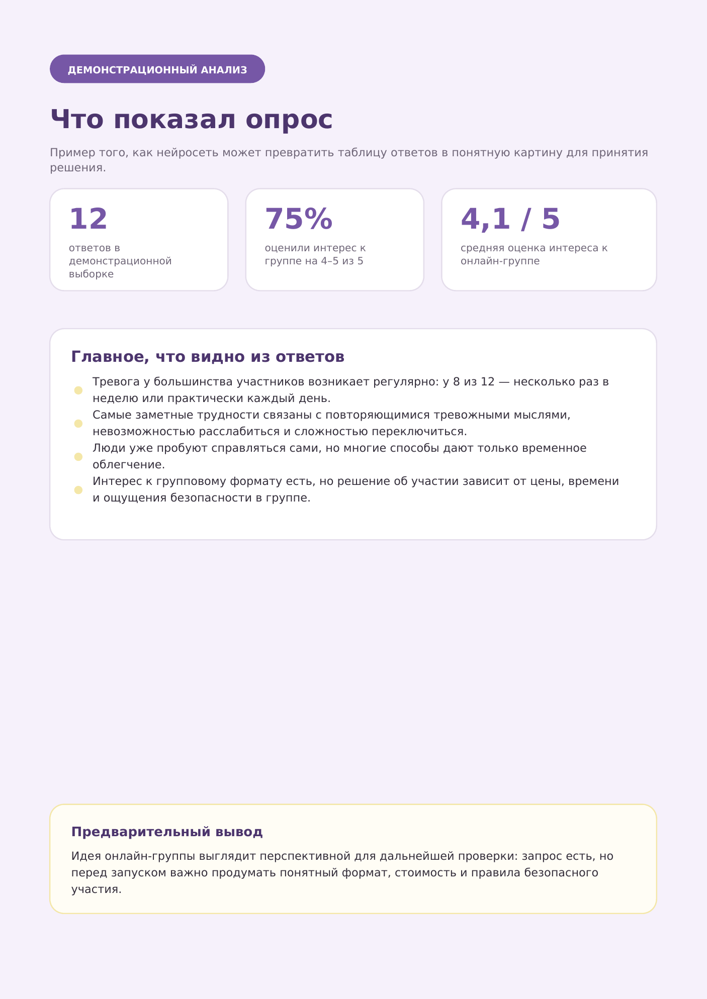
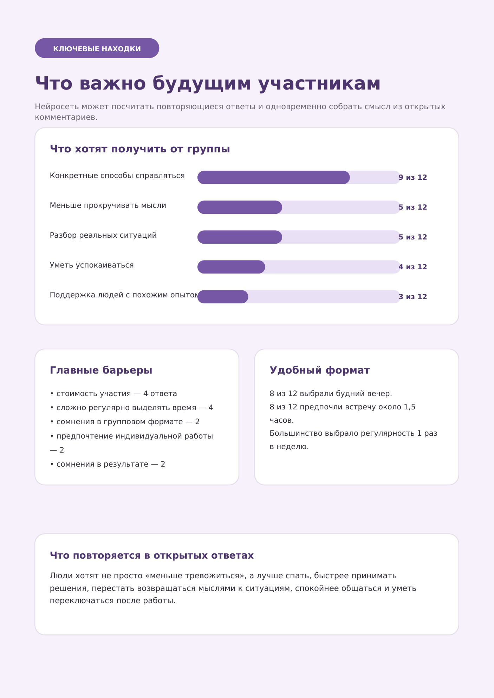
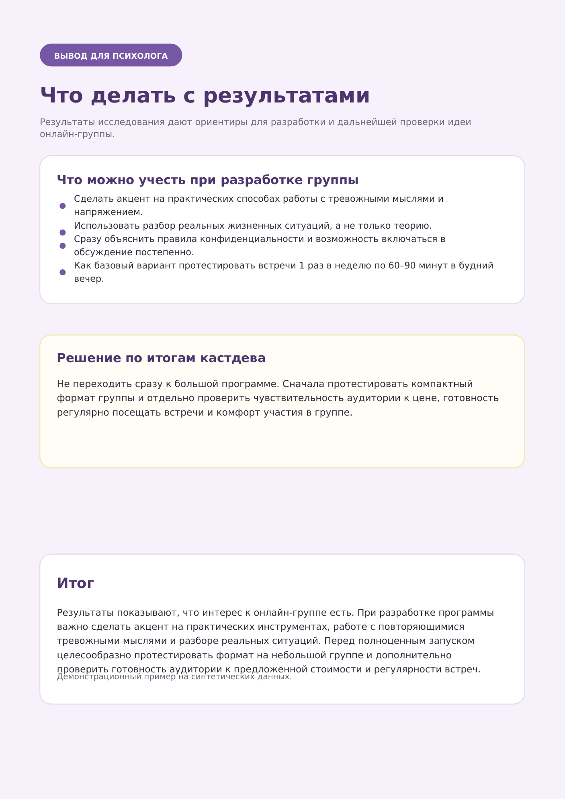

А вдруг я потрачу время,
а это никому не нужно?
Перед созданием нового продукта или услуги важно узнать, насколько это действительно нужно людям.
Нейросеть помогает изучить интересы и потребности аудитории, подготовить вопросы для исследования и разобраться в ответах.
Изучаем интересы и потребности аудитории
Перед созданием нового продукта важно узнать, насколько он действительно нужен людям.
Что важно узнать?
Нейросеть помогает подготовить вопросы для исследования: что спросить, как сформулировать вопросы и какие варианты ответов предложить.
Собираем ответы
После опроса появляются десятки ответов.
Теперь важно разобраться в них и увидеть общую картину: что люди отвечают чаще всего и какие запросы встречаются в их ответах.

Нажмите на изображение, чтобы увеличить
Превращаем ответы в понятные решения
Вместо десятков ответов в таблице с помощью нейросети вы получаете структурированный анализ и понимаете, что действительно важно вашей аудитории.



Нажмите на изображение, чтобы увеличить
Нейросеть помогает создать востребованный продукт
Экономия времени
Не нужно вручную перечитывать десятки ответов и искать главное.
Экономия денег
Можно проверить идею до запуска и не вкладываться в формат, который может не подойти людям.
Понимание аудитории
Вы видите реальные запросы клиентов и аудитории.
Попасть в запрос аудитории
На основе анализа можно создать терапевтическую программу, курс, интенсив или услугу, которые отвечают реальным потребностям людей.